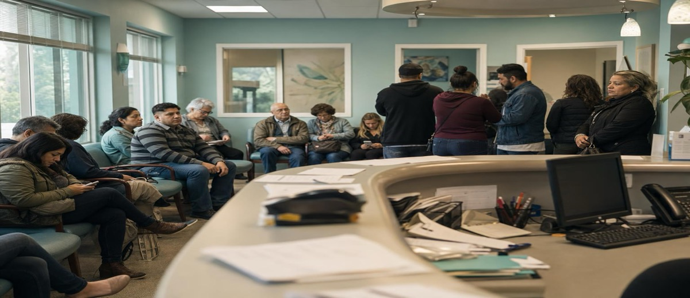

La pregunta que duplica la agenda sin cambiar el anuncio

Me lo dijeron como si fuera magia: "Cambiamos cómo contestamos el teléfono y en tres meses teníamos la agenda llena."
No era magia. Era algo mucho más sencillo —y más rentable que cualquier campaña de publicidad que habían hecho antes.
El cambio que nadie ve desde fuera
Antes de la mejora, cuando un paciente llamaba y preguntaba por precio, la recepcionista hacía lo que hacen casi todas: daba el precio y esperaba.
Esperaba que el paciente decidiera. Esperaba que preguntara más. Esperaba que dijera sí o no.
La mayoría no decían nada. Agradecían, colgaban, y seguían con su día. A veces llamaban al día siguiente. Muchas veces no volvían a llamar.
El cambio fue tan pequeño que cuesta creerlo: ahora la recepcionista da el precio y pregunta: "¿Cuándo le viene mejor, por la mañana o por la tarde?"
Una pregunta.
La conversión de llamadas a citas subió del 40 al 72%.
Por qué funciona (y por qué pocas clínicas lo hacen)
Lo que cambió no es el precio. No es la clínica. No es el anuncio. Lo que cambió es el momento en que se pide al paciente que decida.
Cuando alguien llama ya ha dado el paso más difícil: ha reconocido que tiene un problema y ha buscado ayuda. Está, en términos de marketing, a un paso del sí. El problema es que muchas recepcionistas, sin saberlo, convierten ese momento en un callejón sin salida.
- La respuesta pasiva cierra la puerta: "Son 800 euros" seguido de silencio obliga al paciente a tomar una decisión fría sin apoyo. La mayoría evita decidir y cuelga.
- La pregunta de elección forzada mantiene la conversación viva: "¿Mañana por la mañana o el jueves por la tarde?" no presiona, pero guía. El paciente no elige entre sí y no. Elige entre dos síes.
- El coste de no hacerlo es silencioso: Nadie registra esas llamadas que no cerraron cita. No aparecen en ningún informe. Pero cada una es un paciente que se fue a otra clínica.
No todo el problema está en el marketing
Hay clínicas que invierten 1.500 euros al mes en Google Ads y pierden el 60% de las llamadas en la recepción. No porque la gente no quiera venir. Sino porque nadie entrenó a la persona que coge el teléfono para cerrar la conversación.
Es el error más caro que cometen las clínicas pequeñas y medianas: tratan la recepción como un coste de estructura, no como un canal de venta. Y luego se preguntan por qué el marketing "no funciona".
El problema no siempre es que no llamen suficiente. Muchas veces es que se dejan escapar los que ya están al teléfono, a punto de decir que sí.
Qué medir antes de gastar más en publicidad
Antes de subir el presupuesto de captación, responde esta pregunta con datos reales: de cada diez personas que llaman hoy a tu clínica, ¿cuántas acaban con una cita en la agenda?
Si no lo sabes, ahí está el primer problema. Si lo sabes y el número es bajo, ahí está el segundo.
La recepción bien entrenada es el canal más barato
No hay anuncio que compense una recepción que no convierte. Pero una recepcionista bien entrenada puede hacer por la agenda lo que meses de publicidad no consiguen.
El entrenamiento no tiene que ser complejo. A veces basta con trabajar tres cosas:
- El cierre activo: siempre terminar la llamada con una propuesta concreta de fecha.
- La respuesta al precio: dar el rango con contexto, no un número frío ("depende de la exploración, pero normalmente entre X e Y, ¿le reservo una primera visita gratuita?").
- El seguimiento: si el paciente dice que lo pensará, agendar una llamada de seguimiento para el día siguiente.
Estas tres cosas, trabajadas durante un mes con el equipo de recepción de cualquier clínica, cambian los números de forma visible. Sin cambiar el presupuesto de marketing.
Antes de pedir más presupuesto
Si la próxima reunión de tu clínica va a tratar sobre cómo captar más pacientes, empieza por revisar cuántos estáis perdiendo en el teléfono.
No para culpar a nadie. Sino porque es lo más barato de arreglar y lo que más rápido devuelve resultados.
La agenda llena no siempre empieza en el anuncio. Muchas veces empieza en esa pregunta que nadie hacía: "¿Por la mañana o por la tarde?"